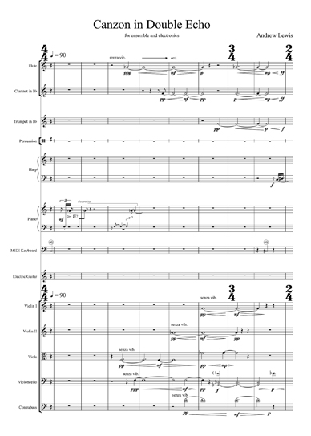
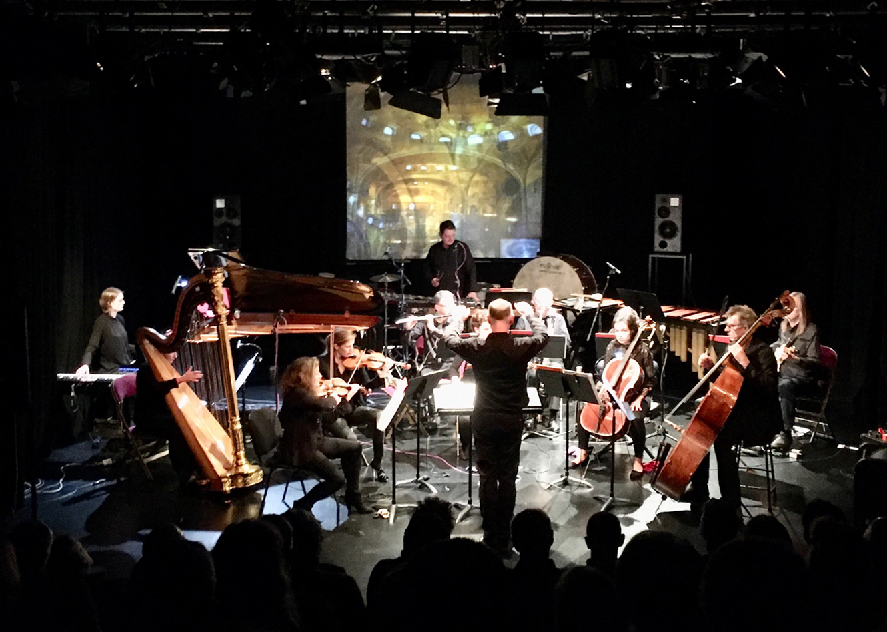

Date of composition: 1999, rev. 2004
Overall duration: c. 12 min
Format: String quartet
Premiere: 24 November, Wigmore Hall, London (UK)
Kreutzer Quartet
SPNM 60th Anniversary
Concert, curated by Sir Peter Maxwell Davies
Score: available
soon from Composers' Edition


Premiere performance of Canzon in Double
Echo with UPROAR and Michael Rafferty
Programme note: (download as PDF)
Tempo Reale reflects on the experience of listening to music ‘in real time’.
In the fast opening and closing sections, a single continuous tremolando darts energetically between multiple lines of music, and from player to player, much as the listeners’ attention moves first to one line, then to another, then to the totality of lines, and so on. It is this active engagement of listener with sound that transform music from the time-less abstraction of a score into the immediate energy of a ‘real time’ musical experience.
During the slower, more reflective centre of the piece, the idea of ‘real time’ is disrupted: echoes and pre-echoes of the material are heard, highlighting the importance of the non-real-time aspects of musical listening: anticipation and memory.